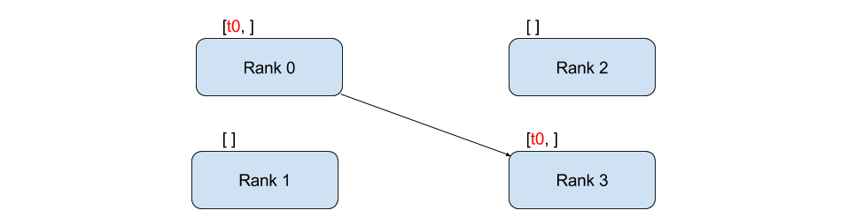

Multi node Distributed training with PyTorch#
Multi node motivation#
In the previous parts, we learned that training deep learning models with multiple GPUs is critical as the number of parameters for neural networks grow. The same logic of using more compute resource to speed things up motivates us to scale further up beyond resources on one node or one machine.
Before we learn about multi node training, let’s first review some notions from previous part of the tutorial.
Review Parallel Computing on HPC#
Login vs Compute Nodes
HPC centers, like TACC, host several supercomputers. Supercomputers, or computer clusters, are a group of interconnected computers such that they can act like a single machine. The various computers that make up the computer cluster are nodes which come in two types: login and compute. Login nodes are those that you interact with in logging on to our machines via SSH and are used for routine task like modifying and organizing files. Compute nodes are where the actual calculations are done and what we will utilize to parallelize the training of neural networks. A GPU node typically consists of multiple GPUs.
The TACC Analysis Portal (TAP) provides simplified access to interactive sessions on TACC large-scale computing resources. TAP targets users who want the convenience of web-based portal access. TAP-Supported applications including Jupyter Notebook.
Review PyTorch DDP#
In the previouse notebook, we have done distributed training with PyTorch DistributedDataParallel (DDP) on multiple GPUs residing on one node. DDP can also run across multiple nodes.
DDP uses collective communications in the torch.distributed package to synchronize gradients and buffers. More specifically, DDP registers an autograd hook for each parameter given by model.parameters() and the hook will fire when the corresponding gradient is computed in the backward pass. Then DDP uses that signal to trigger gradient synchronization across processes.
[1]
Overview of DDP training. Each process independently loads and processes a batch of data and synchronizes local gradients with others through a gradient aggregation process which requires global communications.
The basic idea behind DDP is following - we create processes that replicate a job for multiple times. PyTorch DDP uses torch.distributed.init_process_group method to set up a process group, and distributes data amongst processes with DistributedSampler. It also prepares model impletation with DDP wrapper.
We are introduced to some environment variables that glue the training environment together: WORLD_SIZE, GLOBAL_RANK and LOCAL_RANK. They are fancy names for “total number of GPUs in your job”, “the ID for the GPU in your cluster” and “the local ID for the GPU in a node”.
Outline of this notebook#
This tutorial will approach multi node distributed training using PyTorch with the following steps:
Message exchanging example with PyTorch DDP
Torchrun
Set Environment Variable with mpirun and SLURM
Design Safe ResNet Case Study
Major code modifications for ResNet Training
Data preparation
Launch training script in containerized environment
Multi node application with PyTorch Distributed: message exchanging example#
Before we work on training a machine learning model across multiple nodes, I would first give you an idea of how to use PyTorch to communicate between nodes. As a introduction for writing distributed PyTorch application across multiple nodes, let’s walk through an example of message exchanging on multiple nodes with PyTorch DDP. The code example is based on this PyTorch tutorial.
import torch.distributed as dist
import os
import torch
# In a single node setting, LOCAL_RANK is sufficient to identify a process
LOCAL_RANK = int(os.environ['LOCAL_RANK'])
# In multiple nodes setting, each node has local rank starting from zero, see figure below
GLOBAL_RANK = int(os.environ['RANK'])
WORLD_SIZE = int(os.environ['WORLD_SIZE'])
def run():
tensor = torch.zeros(1)
# LOCAL_RANK is used by run function to assign a GPU device to the worker
# Send tensor to GPU device
device = torch.device("cuda:{}".format(LOCAL_RANK))
tensor = tensor.to(device)
if GLOBAL_RANK == 0:
for rank_recv in range(1, WORLD_SIZE):
dist.send(tensor=tensor, dst=rank_recv)
# Here we use global rank to identify which process is printing
print('worker_{} sent data to Rank {}\n'.format(0, rank_recv))
else:
dist.recv(tensor=tensor, src=0)
print('worker_{} has received data from rank {}\n'.format(GLOBAL_RANK, 0))
def init_processes():
# Establishing the group of processors that will be used so that the processors can communicate
# the worker will be identified as worker $GLOBAL_RANK among a gourp of $WORLD_SIZE workers
# backend specifies the library (nccl) that implement fast communication between workers
dist.init_process_group(backend="nccl", #backend being used; "nccl" for using GPUs. See details below.
world_size=WORLD_SIZE, #total number of processors being used
rank=GLOBAL_RANK) #rank of the current process being used
run()
if __name__ == "__main__":
init_processes()
If we launch the python script on 2 nodes on Frontera rtx-dev nodes, each equiped with 4 GPUs,
WORLD_SIZE, which is total number of GPUs in your job, is 8,
GLOBAL_RANK, which is the ID for the GPU in your cluster, is [0, 1, 2, 3, 4, 5, 6, 7].
LOCAL_RANK, which is the local ID for the GPU in a node, is [0, 1, 2, 3].
{kind=link}
Let’s assume we have these variables set for us already.
Communication backend for torch.distributed#
torch.distributed supports several built-in backends.
In our code we specified our communication backend to be “NCCL” dist.init_process_group(backend="nccl").
The NVIDIA Collective Communication Library (NCCL) implements multi-GPU and multi-node communication primitives optimized for NVIDIA GPUs and Networking. NCCL provides routines such as all-gather, all-reduce, broadcast, reduce, reduce-scatter as well as point-to-point send and receive that are optimized to achieve high bandwidth and low latency over PCIe and NVLink high-speed interconnects within a node and over NVIDIA Mellanox Network across nodes.
If we were running our application on hardware equipped with CPU only, the NCCL backend, which is exclusively developed for NVIDIA GPUs, would not work. We would need to change to the ‘gloo’ backend for communication between CPUs dist.init_process_group(backend="gloo").
! mpirun -np 2 -ppn 1 message_passing.sh
Training command: /opt/apps/tacc-apptainer/1.1.8/bin/apptainer exec --nv --bind /run/user:/run/user /scratch1/07980/sli4/containers/cnn_course.sif torchrun --nproc_per_node 4 --nnodes 2 --node_rank=0 --master_addr=c196-022 --master_port=1234 message_passing.py
Training command: /opt/apps/tacc-apptainer/1.1.8/bin/apptainer exec --nv --bind /run/user:/run/user /scratch1/07980/sli4/containers/cnn_course.sif torchrun --nproc_per_node 4 --nnodes 2 --node_rank=1 --master_addr=c196-022 --master_port=1234 message_passing.py
13:4: not a valid test operator: (
13:4: not a valid test operator: 535.113.01
13:4: not a valid test operator: (
13:4: not a valid test operator: 535.113.01
/home1/07980/sli4/.bashrc: line 1: module: command not found
/home1/07980/sli4/.bashrc: line 2: module: command not found
/home1/07980/sli4/.bashrc: line 3: module: command not found
[rank4]:[W ProcessGroupNCCL.cpp:2302] Warning: 0TORCH_NCCL_AVOID_RECORD_STREAMS=1 has no effect for point-to-point collectives. (function operator())
[rank5]:[W ProcessGroupNCCL.cpp:2302] Warning: 0TORCH_NCCL_AVOID_RECORD_STREAMS=1 has no effect for point-to-point collectives. (function operator())
[rank6]:[W ProcessGroupNCCL.cpp:2302] Warning: 0TORCH_NCCL_AVOID_RECORD_STREAMS=1 has no effect for point-to-point collectives. (function operator())
[rank7]:[W ProcessGroupNCCL.cpp:2302] Warning: 0TORCH_NCCL_AVOID_RECORD_STREAMS=1 has no effect for point-to-point collectives. (function operator())
[rank3]:[W ProcessGroupNCCL.cpp:2302] Warning: 0TORCH_NCCL_AVOID_RECORD_STREAMS=1 has no effect for point-to-point collectives. (function operator())
[rank0]:[W ProcessGroupNCCL.cpp:2302] Warning: 0TORCH_NCCL_AVOID_RECORD_STREAMS=1 has no effect for point-to-point collectives. (function operator())
[rank2]:[W ProcessGroupNCCL.cpp:2302] Warning: 0TORCH_NCCL_AVOID_RECORD_STREAMS=1 has no effect for point-to-point collectives. (function operator())
[rank1]:[W ProcessGroupNCCL.cpp:2302] Warning: 0TORCH_NCCL_AVOID_RECORD_STREAMS=1 has no effect for point-to-point collectives. (function operator())
worker_0 sent data to Rank 1
worker_1 has received data from rank 0
worker_0 sent data to Rank 2
worker_2 has received data from rank 0
worker_0 sent data to Rank 3
worker_3 has received data from rank 0
worker_0 sent data to Rank 4
worker_4 has received data from rank 0
worker_0 sent data to Rank 5
worker_5 has received data from rank 0
^C
[mpiexec@c196-022.frontera.tacc.utexas.edu] Sending Ctrl-C to processes as requested
[mpiexec@c196-022.frontera.tacc.utexas.edu] Press Ctrl-C again to force abort
[2024-06-24 12:53:57,571] torch.distributed.elastic.agent.server.api: [WARNING] Received Signals.SIGINT death signal, shutting down workers
[2024-06-24 12:53:57,571] torch.distributed.elastic.agent.server.api: [WARNING] Received Signals.SIGINT death signal, shutting down workers
[2024-06-24 12:53:57,571] torch.distributed.elastic.multiprocessing.api: [WARNING] Sending process 18116 closing signal SIGINT
[2024-06-24 12:53:57,571] torch.distributed.elastic.multiprocessing.api: [WARNING] Sending process 7318 closing signal SIGINT
[2024-06-24 12:53:57,571] torch.distributed.elastic.multiprocessing.api: [WARNING] Sending process 18117 closing signal SIGINT
[2024-06-24 12:53:57,571] torch.distributed.elastic.multiprocessing.api: [WARNING] Sending process 18118 closing signal SIGINT
[2024-06-24 12:53:57,571] torch.distributed.elastic.multiprocessing.api: [WARNING] Sending process 7319 closing signal SIGINT
[2024-06-24 12:53:57,571] torch.distributed.elastic.multiprocessing.api: [WARNING] Sending process 7320 closing signal SIGINT
[2024-06-24 12:53:57,571] torch.distributed.elastic.multiprocessing.api: [WARNING] Sending process 18119 closing signal SIGINT
[2024-06-24 12:53:57,571] torch.distributed.elastic.multiprocessing.api: [WARNING] Sending process 7321 closing signal SIGINT
Traceback (most recent call last):
File "/home1/07980/sli4/cnn-course-scale/part3/message_passing.py", line 31, in <module>
init_processes()
File "/home1/07980/sli4/cnn-course-scale/part3/message_passing.py", line 28, in init_processes
run()
File "/home1/07980/sli4/cnn-course-scale/part3/message_passing.py", line 18, in run
dist.send(tensor=tensor, dst=rank_recv)
File "/usr/local/lib/python3.10/dist-packages/torch/distributed/c10d_logger.py", line 72, in wrapper
File "/usr/local/lib/python3.10/dist-packages/torch/distributed/distributed_c10d.py", line 1635, in send
KeyboardInterrupt
Traceback (most recent call last):
File "/home1/07980/sli4/cnn-course-scale/part3/message_passing.py", line 31, in <module>
init_processes()
File "/home1/07980/sli4/cnn-course-scale/part3/message_passing.py", line 28, in init_processes
run()
File "/home1/07980/sli4/cnn-course-scale/part3/message_passing.py", line 21, in run
dist.recv(tensor=tensor, src=0)
File "/usr/local/lib/python3.10/dist-packages/torch/distributed/c10d_logger.py", line 72, in wrapper
File "/usr/local/lib/python3.10/dist-packages/torch/distributed/distributed_c10d.py", line 1678, in recv
KeyboardInterrupt
Launching Multi node distributed Training: how to set the environment variables#
To set the environment variables including WORLD_SIZE, GLOBAL_RANK and LOCAL_RANK, we need to use mpirun and torchrun together.
Torchrun#
To run multi node jobs, we need to torchrun on each node. A torchrun command needs these environment variables to be set:
nproc-per-node: Number of workers per node
nnodes: Number of nodes
node-rank: Rank of the node for multi-node distributed training
master-addr: Address of the master node (rank 0). Here it is the hostname of rank 0.
master-port: Port on the master node (rank 0) to be used for communication during distributed training.
torchrun will create WORLD_SIZE, GLOBAL_RANK and LOCAL_RANK for each worker.
If we want to launch our job on two nodes (c000-001 and c000-002), we need to ssh into the two nodes and run the following commands:
# on c000-001 (the master node)
torchrun --nproc_per_node 4 --nnodes 2 --node_rank=0 --master_addr=c000-001 --master_port=1234 message_passing.py
# on c000-002 (the workder node)
# the only difference in the argument is node rank
torchrun --nproc_per_node 4 --nnodes 2 --node_rank=1 --master_addr=c000-001 --master_port=1234 message_passing.py
The above example is suitable for the TACC Frontera machine, where each rtx node is equipped with 4 GPUs (nproc_per_node is 4).
Say if we would run our application on Lonestar6, another different equipped with GPU from TACC, with 3 GPUs on each node, we would changed the “nproc_per_node” argument to 3:
torchrun --nproc_per_node 3 --nnodes 2 --node_rank=0 --master_addr=c000-001 --master_port=1234 message_passing.py
Set Environment Variable with mpirun and SLURM#
The torchrun launcher is all we need to launch a script on multiple nodes. Why do we want to use it in combination with mpirun and SLURM? We have to ssh on to each machine and manually modify the run the launch command on each node, and that is error-prone. With the help of mpirun and SLURM, we can launch the same job with only one command.
Message Passing Interface (MPI)#
The Message Passing Interface (MPI) is a standardized and portable message-passing standard designed to function on parallel computing architectures.[2] Here we use MPI as a fronetend for launching the job, communicating node information.
mpirun command#
Open MPI is a MPI library project. The mpirun command is used here to execute parallel jobs in Open MPI.
We use an mpirun command line of the following form:
% mpirun [ -np number-of-processes ] [-ppn processes-per-node] <program>
This command will run number-of-processes copies of <program>.
In the command line above:
-np sets the number of MPI processes to launch.
-ppn sets the number of processes to launch on each node.
As a concrete example, to run message_passing.sh on 2 nodes, we would use this command:
# launch 2 MPI processes, with 1 process launched on each one of the 2 nodes
% mpirun -np 2 -ppn 1 message_passing.sh
We run our application on 2 nodes through Jupyter Notebook application on TAP. Each compute node is equipped with 4 GPUs
After we start the MPI application with the mpirun command, the command sets a number of build-in environment variables for us. One of the environment variables set is PMI_RANK. It is the rank of the current process among all of the processes that are created by the mpirun command that created the current process. We will set node-rank argument for torchrun, which is the rank of the node for multi-node distributed training, as PMI_RANK.
SLURM#
SLURM, or Simple Linux Utility for Resource Management, is a High performance computing (HPC) Job Scheduler that helps manage and allocates compute resources to make sure access is distributed fairly between users.
We use slurm command scontrol show hostnames to print hostnames for job. With a list of host names, we can obtain number of nodes for the job.
Finally, we have our script that can be launched with mpirun command from the master node. The “PRELOAD” part of the script launches a container with Python environment set up for this tutorial. Containers allow you to package an application along with all of its dependencies, so they are very handy when we run code on HPC platforms like TACC. This tutorial will not go into details about containers, but TACC has tutorial available if you are interested in containers @ TACC.
#!/bin/bash
LOCAL_RANK=$PMI_RANK
NODEFILE=/tmp/hostfile
scontrol show hostnames > $NODEFILE
# set master address for torchrun as the first line of scontrol's output
MAIN_RANK=$(head -n 1 $NODEFILE)
NNODES=$(< $NODEFILE wc -l)
PRELOAD="/opt/apps/tacc-apptainer/1.1.8/bin/apptainer exec --nv --bind /run/user:/run/user /scratch1/07980/sli4/containers/cnn_course.sif "
CMD="torchrun --nproc_per_node 4 --nnodes $NNODES --node_rank=$LOCAL_RANK --master_addr=$MAIN_RANK --master_port=1234 message_passing.py"
FULL_CMD="$PRELOAD $CMD"
echo "Training command: $FULL_CMD"
eval $FULL_CMD
Our mpirun command
% mpirun -np 2 -ppn 1 message_passing.sh
launches 2 MPI processes, with 1 process launched on each one of the 2 nodes. Let’s say process 0 runs on node A, and process 1 runs on node B. Each process runs the message_passing.sh script.
In the message_passing.sh script, on accessing PMI_RANK, node A gets value 0, and node B gets value 1.
with
% scontrol show hostnames
command, we get a list of host names. A concrete example of the output from this command is
c000-001
c000-002
This suggests we have a total of 2 nodes in this job, their host names are c000-001 and c000-002. We set master address for torchrun command as c000-001.
Let’s assume node A with rank 0 uses host name c000-001. Node B with rank 1 uses host name c000-002. The full command launched on node A is:
/opt/apps/tacc-apptainer/1.1.8/bin/apptainer exec --nv --bind /run/user:/run/user /scratch1/07980/sli4/containers/cnn_course.sif torchrun --nproc_per_node 4 --nnodes 2 --node_rank=0 --master_addr=c000-001 --master_port=1234 message_passing.py
And the full command launched on node B is：
/opt/apps/tacc-apptainer/1.1.8/bin/apptainer exec --nv --bind /run/user:/run/user /scratch1/07980/sli4/containers/cnn_course.sif torchrun --nproc_per_node 4 --nnodes 2 --node_rank=1 --master_addr=c000-001 --master_port=1234 message_passing.py
Launching the code with mpirun -np 2 -ppn 1 message_passing.sh command, we get an output like this：
worker_0 sent data to Rank 1
worker_1 has received data from rank 0
worker_0 sent data to Rank 2
worker_2 has received data from rank 0
worker_0 sent data to Rank 3
worker_3 has received data from rank 0
worker_0 sent data to Rank 4
worker_4 has received data from rank 0
worker_0 sent data to Rank 5
worker_5 has received data from rank 0
worker_0 sent data to Rank 6
worker_6 has received data from rank 0
worker_0 sent data to Rank 7
worker_7 has received data from rank 0
The above message exchanging example with PyTorch DDP showed us how to write distributed PyTorch application across multiple nodes. With the knowledge regarding torchrun and environment variables, we are almost ready for our goal for this tutorial: train a machine learning model across multiple nodes. Before we start to work on the code for training our model, I would like to mention that the point-to-point communication used in the example is different from the collective communication used in PyTorch DDP.
Point-to-Point Communication vs. Collective Communication#
The above example uses point-to-point communication through send and recv functions. Point-to-point communication is useful when we want more find-grained control over the communication of our process.
 [4]
Remember PyTorch’s DistributedDataParallel uses collective communications instead of point-to-point ones: all gradients are synchronized by averaging gradients from each GPU and sent back to the individual GPUs via an Allreduce operation. The Allreudce collective communication applies on every tensor and stores result in all processes in the process group.
 [5]
[5]
Design Safe ResNet Case Study: Train on Multiple Nodes#
ResNet Training#
With the understanding of multi node distributed training with PyTorch, we can adapt our Design Safe ResNet training script into a version that runs in parallel on multiple nodes.
In single node multi gpu trainig, local rank is enough to allocate the rank for a GPU. In the multi node setting, we need to use $GLOBAL_RANK variable for this. And that is the ONLY difference between single and multi node training.
In summary, the only change we need to make in the training python script, is when we save/load the model, since we only want to save one copy of the model, we choose to save it on the GPU device with GLOBAL_RANK, instead of the devices with LOCAL_RANK 0.
Single node:#
def train(..):
local_rank = int(os.environ['LOCAL_RANK'])
for epoch in epochs:
for batch in batches:
step(...). # forward pass, backward pass, update weights
if local_rank == 0:
torch.save({
'epoch':epoch,
'machine':local_rank,
'model_state_dict':model.module.state_dict(),
'accuracy':val_acc,
'loss':val_loss
}, checkpoint_file)
Multi node:#
def train(..):
rank = int(os.environ['RANK'])
for epoch in epochs:
for batch in batches:
step(...). # forward pass, backward pass, update weights
if rank == 0:
torch.save({
'epoch':epoch,
'machine':rank,
'model_state_dict':model.module.state_dict(),
'accuracy':val_acc,
'loss':val_loss
}, checkpoint_file)
We will use launch the python script with the “mpirun + torchrun” launcher we used for the message passing example:
We use mpirun to launch a bash script from one node:
mpirun -np 2 -ppn 1 run_distributed.sh
Where the run_distributed.sh script generates the torchrun command on each node for us:
#!/bin/bash
LOCAL_RANK=$PMI_RANK
NODEFILE=/tmp/hostfile
scontrol show hostnames > $NODEFILE
MAIN_RANK=$(head -n 1 $NODEFILE)
NNODES=$(< $NODEFILE wc -l)
PRELOAD="/opt/apps/tacc-apptainer/1.1.8/bin/apptainer exec --nv --bind /run/user:/run/user /scratch1/07980/sli4/containers/cnn_course.sif "
# only difference with the message passing example is that we now run the torch_train_distributed.py python script instead of the message_passsing.py script
CMD="torchrun --nproc_per_node 4 --nnodes $NNODES --node_rank=$LOCAL_RANK --master_addr=$MAIN_RANK --master_port=1234 torch_train_distributed.py"
FULL_CMD="$PRELOAD $CMD"
echo "Training command: $FULL_CMD"
eval $FULL_CMD
Data Preparation#
One last note for multi node training is about data preparation.
In the Design Safe example, we move data to each node’s local SSD before training, to obtain superior I/O speed and low latency. In the single node example, this is done by a copy command to /tmp:
$ cp -r /scratch1/07980/sli4/training/cnn_course/data/data.tar.gz /tmp/
In the multi node training case, we need to copy our dataset onto each one of the nodes’ local SSD, meaning we need to launch this copy command on each one of the nodes. We do this by ssh on to each node in the job and launch the copy command.
Our copy_date.sh script serves this purpose:
for NODE in $NODELIST; do
ssh $NODE "$COPY_COMMAND" &
done
Now that we have walked through all the bullet points regarding multi node training, we can adapt our Design Safe code to run on multiple nodes.
We need to first copy data to every node.
! copy_data.sh /scratch1/07980/sli4/training/cnn_course/data/data.tar.gz /tmp
Command: cp -r /scratch1/07980/sli4/training/cnn_course/data/data.tar.gz /tmp ; tar zxf /tmp/data.tar.gz -C /tmp; ls /tmp/Dataset_2; rm /tmp/data.tar.gz;
Launching rank 0 on local node c196-022
Launching rank 1 on remote node c196-031
Train Validation
Train
Validation
Launch training script in containerized environment#
! mpirun -np 2 -ppn 1 run_distributed.sh
Training command: /opt/apps/tacc-apptainer/1.1.8/bin/apptainer exec --nv --bind /run/user:/run/user /scratch1/07980/sli4/containers/cnn_course.sif torchrun --nproc_per_node 4 --nnodes 2 --node_rank=0 --master_addr=c196-022 --master_port=1234 torch_train_distributed.py
Training command: /opt/apps/tacc-apptainer/1.1.8/bin/apptainer exec --nv --bind /run/user:/run/user /scratch1/07980/sli4/containers/cnn_course.sif torchrun --nproc_per_node 4 --nnodes 2 --node_rank=1 --master_addr=c196-022 --master_port=1234 torch_train_distributed.py
13:4: not a valid test operator: (
13:4: not a valid test operator: 535.113.01
13:4: not a valid test operator: (
13:4: not a valid test operator: 535.113.01
/home1/07980/sli4/.bashrc: line 1: module: command not found
/home1/07980/sli4/.bashrc: line 2: module: command not found
/home1/07980/sli4/.bashrc: line 3: module: command not found
Train set size: 1322, Validation set size: 363
(Epoch 1/5) Time: 24s
(Epoch 1/5) Average train loss: 0.062289180854956314, Average train accuracy: 0.6553030610084534
(Epoch 1/5) Val loss: 0.06072605773806572, Val accuracy: 0.5654761791229248
(Epoch 1/5) Current best val acc: 0.8273810148239136
(Epoch 2/5) Time: 24s
(Epoch 2/5) Average train loss: 0.05039523688681198, Average train accuracy: 0.7765151858329773
(Epoch 2/5) Val loss: 0.06147060915827751, Val accuracy: 0.6875
(Epoch 2/5) Current best val acc: 0.8273810148239136
(Epoch 3/5) Time: 24s
(Epoch 3/5) Average train loss: 0.04666633960424047, Average train accuracy: 0.7821969985961914
(Epoch 3/5) Val loss: 0.04850030690431595, Val accuracy: 0.7470238208770752
(Epoch 3/5) Current best val acc: 0.8273810148239136
(Epoch 4/5) Time: 25s
(Epoch 4/5) Average train loss: 0.03595114583996209, Average train accuracy: 0.875
(Epoch 4/5) Val loss: 0.042449064552783966, Val accuracy: 0.7470238208770752
(Epoch 4/5) Current best val acc: 0.8273810148239136
(Epoch 5/5) Time: 23s
(Epoch 5/5) Average train loss: 0.030091496523131023, Average train accuracy: 0.9147727489471436
(Epoch 5/5) Val loss: 0.04339698702096939, Val accuracy: 0.7619048357009888
(Epoch 5/5) Current best val acc: 0.8273810148239136
Best model (val loss: 0.040118508040905, val accuracy: 0.8273810148239136) has been saved to /home1/07980/sli4/cnn-course-scale/part3/output_model/best_model.pt
Cleaning up the distributed environment...
Distributed environment has been properly closed
Compare Performance#
After launching the training command, you can compare the time it takes to train our model for 1 epoch with training on single node. How does our training scale?
Summary#
In this notebook we introduced how to do multi node distributed training with PyTorch. We used a message exchanging example to show how to write distributed PyTorch application across multiple nodes. In the example, we used torchrun launcher. We set environment variables with mpirun and SLURM. With knowledge of torchrun, mpi and SLURM, we further learned about doing distributed machine learning model training across multiple nodes with the Design Safe ResNet case study. We talked about major code modifications for ResNet Training, learned about data preparation on multiple nodes, and finally launched our training script in containerized environment.
Reference:
[1] Choi, Jong Youl & Zhang, Pei & Mehta, Kshitij & Blanchard, Andrew & Lupo Pasini, Massimiliano. (2022). Scalable training of graph convolutional neural networks for fast and accurate predictions of HOMO-LUMO gap in molecules. Journal of Cheminformatics. 14. 10.1186/s13321-022-00652-1.
[2] “Message Passing Interface :: High Performance Computing”. hpc.nmsu.edu. Retrieved 2022-08-06.
[3] https://pytorch.org/tutorials/intermediate/ddp_series_multinode.html
[4] https://pytorch.org/tutorials/intermediate/dist_tuto.html#point-to-point-communication
[5] https://pytorch.org/tutorials/intermediate/dist_tuto.html#collective-communication